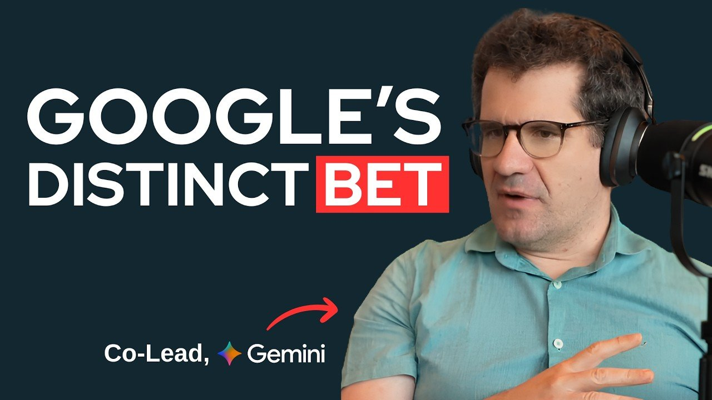
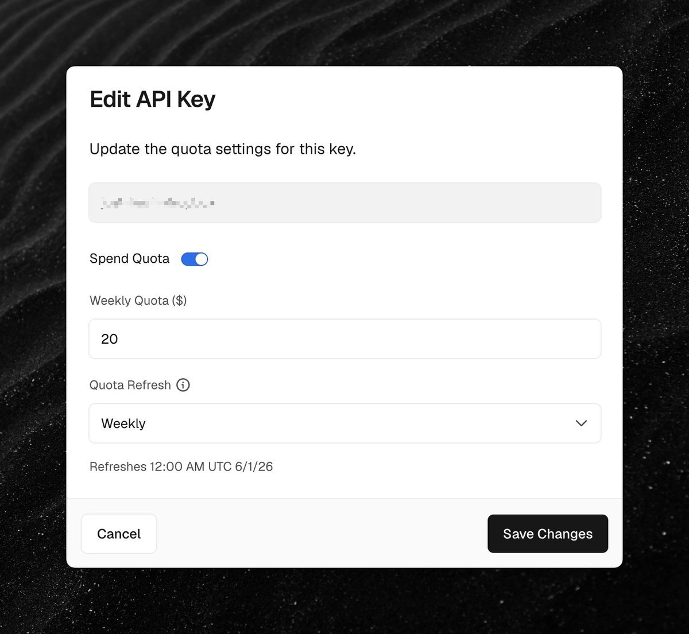
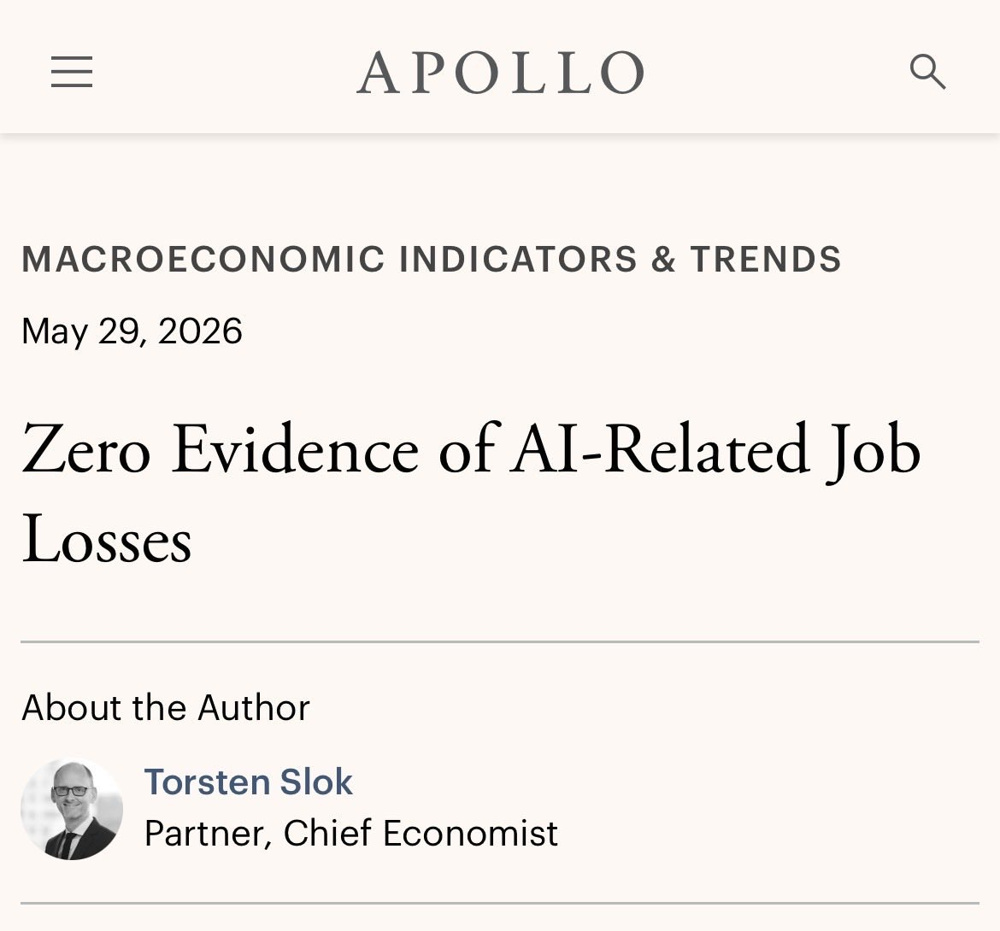
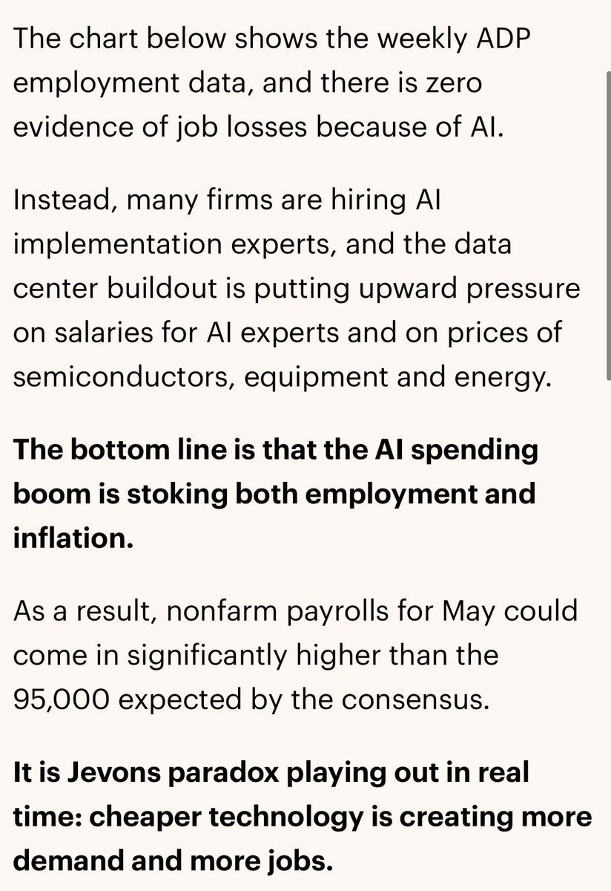
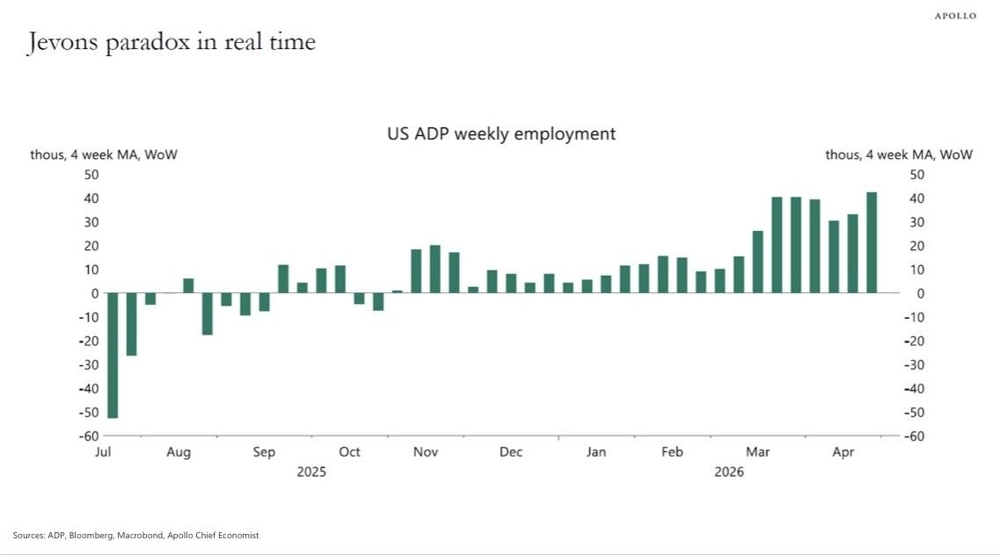
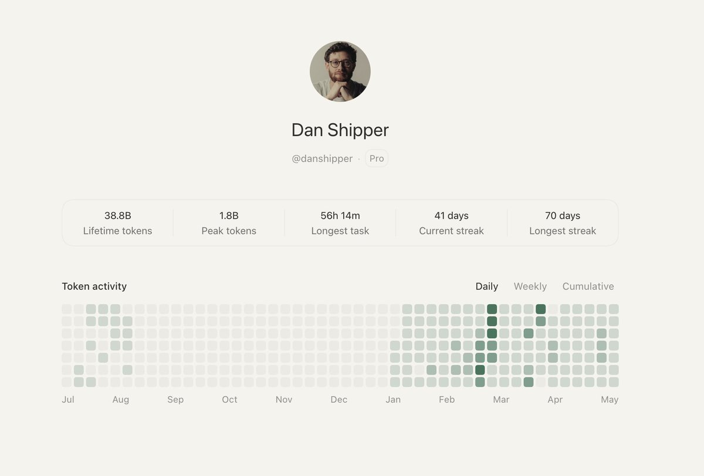
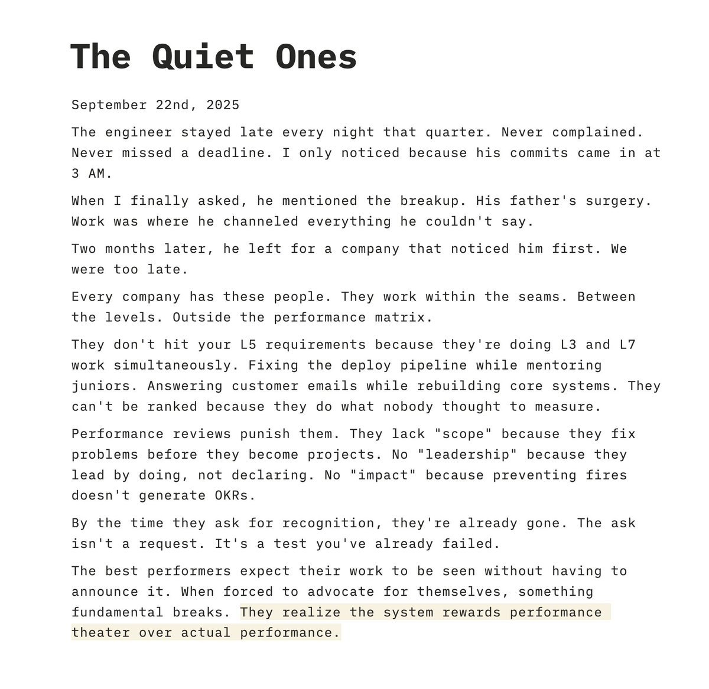
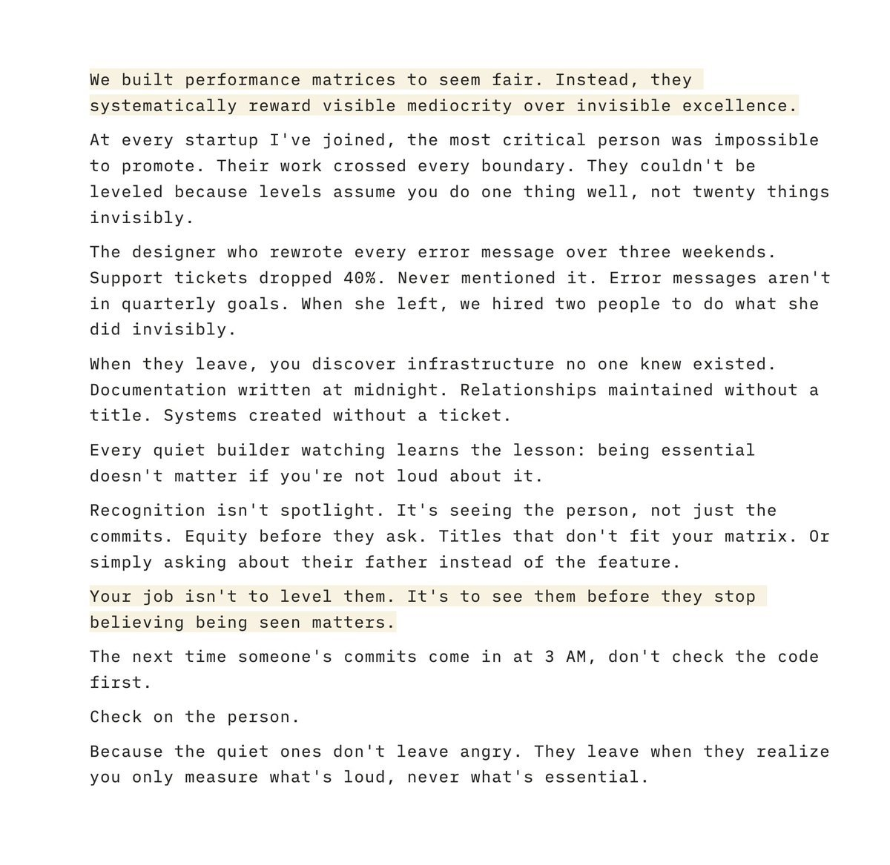

AI 日报 · 2026年6月1日 · 周一
AI 建造者日报
前晚 Gemini 联合负责人 Oriol Vinyals 在 Unsupervised Learning 播客上丢出一句话：如果拿七年前的标准衡量，现在的模型已经是 AGI 了。但他真正追的东西比“通过图灵测试”野心大得多，模型能不能像 AlphaGo 的 Move 37 那样，在机器学习研究本身做出人类想不到的创新。
Gemini
世界模型
强化学习
记忆系统
Agent 架构
GitHub Trending
2
今日重点
1
深度对话
10
建造者动态
12
趋势项目
今日要点
🧠 Oriol Vinyals：真正缺失的是持续学习与研究创新。 当前模型在数学和编程上的 RL 突破已经惊人，但 Gemini 团队更关心世界模型、记忆系统、Agent 架构，以及模型是否能提出人类没想到的机器学习创新。

📰 Anthropic Claude Managed Agents 更新。 新能力包括 dreaming、outcomes、multiagent orchestration。最有趣的是 dreaming：Agent 会在后台回顾历史会话，发现模式并自我优化，不需要人类介入。
深度对话
Oriol Vinyals：从世界模型到 Move 37 式创新
核心论点：Vinyals 系统性分享了 Gemini 团队对世界模型、RL 下一阶段、记忆系统、以及 Agent 架构的思考。他认为当前模型在数学和编程上的 RL 突破是惊人的，但真正令人兴奋的是“元能力”：持续学习、从经验中高效抽象、以及在新领域中的泛化。
世界模型的 GPT 时刻尚未到来
从纯视频数据提取概念而不依赖语言标注，是机器学习十年来未解的难题。Omni 虽然强大，但那种“给所有视频就能学会重力定律”的纯无监督迁移还没实现。
RL 的下一个前沿不是垂直领域，是元能力
数学和编程可以验证，所以 RL 效果爆炸。但大部分我们希望模型做的事根本无法写出验证器。让人乐观的是，验证总是比创造简单，模型自己终将成为评判者。
记忆系统 = 文件系统
当前最实用的记忆方案不是改权重，而是 Agent 在交互中将思考写入文件系统、建立知识库。这种非参数化的记忆方式可能是下一个类似推理突破的范式转移。
Bitter Lesson 正在吃掉 Agent 脚手架
今天人们手写的 multi-agent、delegation、长时间运行系统，最终会被模型自己动态生成。模型会为当前任务自动决定需要怎样的子 Agent 架构。
“AGI 已经很近了”
Vinyals 同意 Demis 在 Google I/O 上“处在奇点山脚”的判断，但他补充：真正的缺失是模型从经验中持续学习的能力。
建造者动态
Codex、Vercel、Box、OpenClaw、Every、Cursor 与 YC 的今天
OpenAI Codex 团队 Thibault Sottiaux
Codex 用户突破 500 万，GPT-5.5 带来速度与效率的显著跃升。从 5.0→5.1→5.5 的版本号递增对应的是能力提升和 token 效率的改善。他还在征集社区反馈：有什么长期没修、又很烦人的问题？
Vercel CEO Guillermo Rauch
发布 AI Gateway 的按 API Key 消费上限功能。关于产品哲学，他只说了八个词：“Ship the best product. Use lots of AI, some AI, maybe no AI. Just be the best.”

Box CEO Aaron Levie
在和大量企业 CIO/CTO 的交流中发现一个反直觉趋势：AI 正在创造而不是消灭工作岗位。企业因 AI 增长，催生了 FDE、工程等新角色，而非简单替代。



OpenClaw 创始人 Peter Steinberger
GPT 5.5 让他的 Agent 任务从 30-60 分钟延伸到 4-10 小时，且可靠性大幅提升。“Yielding agents is a skill” 也是一句提醒：驾驭 Agent 本身就是一门手艺。他还指出 Codex 的一个有趣现象：直接问有没有 bug 会说没问题，但告诉它“这里有 bug”就会不断深入发现真正的问题。
Every CEO Dan Shipper
Codex 重度使用数据：380 亿 token 消耗，单次最长任务 56 小时，连续 41 天使用。42 天 streak 还在继续。

Roblox / 独立创作者 Peter Yang
预言 AI 教育的终极形态：在玩 Final Fantasy 的过程中学会数学和计算机科学。他已经用 Brilliant.org 在教女儿编程。
FPV Ventures Nikunj Kothari
“Time is a flat circle.” 对于那些重新进入讨论的老话题，这是个优雅的提醒。


GitHub Trending · 2026-06-01
今日 12 个趋势项目
1. microsoft/markitdown ⭐ 2,798 · Python
将 Office 文档批量转换为 Markdown 的 Python 工具，微软出品。
2. harry0703/MoneyPrinterTurbo ⭐ 1,937 · Python
利用 AI 大模型一键生成高清短视频。面向中文创作者的视频自动化生产工具。
3. codecrafters-io/build-your-own-x ⭐ 1,158 · Markdown
通过从零重建你喜爱的技术来精通编程，涵盖 Git、Redis、Docker 等数十个项目。
4. OpenBMB/VoxCPM ⭐ 635 · Python
无 Tokenizer 的多语言语音合成模型，支持创意声音设计和逼真声音克隆。面壁智能出品。
5. FareedKhan-dev/train-llm-from-scratch ⭐ 626 · Jupyter Notebook
从下载数据到生成文本，一条清晰的训练 LLM 实战路径。
6. anthropics/claude-code ⭐ 489 · Python
Anthropic 官方的终端 Agent 编码工具，理解代码库并加速开发。
7. Crosstalk-Solutions/project-nomad ⭐ 374 · TypeScript
离线生存计算机，预装关键工具、知识和生存指南的独立设备。
8. revfactory/harness ⭐ 323 · HTML
元技能框架，设计特定领域的 Agent 团队，定义专业 Agent 并生成其使用的技能。
9. supermemoryai/supermemory ⭐ 264 · TypeScript
AI 时代的内存引擎与 API，极速、可扩展的长期记忆基础设施。
10. EveryInc/compound-engineering-plugin ⭐ 251 · TypeScript
Compound Engineering 官方插件，同时支持 Claude Code、Codex、Cursor。
11. emmabostian/developer-portfolios ⭐ 73 · Python
开发者作品集灵感合集，Emma Bostian 维护。
12. github/docs ⭐ 27 · TypeScript
GitHub 官方文档的开源仓库。
今日思考
Move 37 式的创新，才是 AGI 的真正试金石
Vinyals 说他最不确定的问题是：模型能否真正创新？不是搜索空间里的穷举，而是人类看了会愣住的那种“这怎么可能想到”。
当模型能提出一个机器学习研究者都没想到的架构改进时，世界的运转方式会彻底改变。
今日一问：我们该用什么信号判断模型已经具备真正的研究创新能力？
参考来源
Oriol Vinyals 播客
Thibault Sottiaux — Codex 用户突破 500 万
Thibault Sottiaux — 社区反馈征集
Guillermo Rauch — AI Gateway 消费上限
Guillermo Rauch — 产品哲学
Aaron Levie — AI 创造岗位
Peter Steinberger — GPT 5.5 长任务
Peter Steinberger — Codex 找 bug
Dan Shipper — Codex 使用数据
Ryo Lu — Cursor Auto-review
Garry Tan — 加州投票指南
Peter Yang — AI 教育
Zara Zhang — Opus 4.8 输出风格
Nikunj Kothari — Time is a flat circle
Anthropic Claude Managed Agents 更新
GitHub: microsoft/markitdown
GitHub: MoneyPrinterTurbo
GitHub: build-your-own-x
GitHub: OpenBMB/VoxCPM
GitHub: train-llm-from-scratch
GitHub: anthropics/claude-code
GitHub: project-nomad
GitHub: revfactory/harness
GitHub: supermemory
GitHub: compound-engineering-plugin
GitHub: developer-portfolios
GitHub: github/docs
关注建造者，而非意见领袖。明天见。